VLM-AR3L: Vision-Language Models for Absolute and Relative Rewards in Reinforcement Learning
1Department of Computer Science, National Tsing Hua University
2NVIDIA AI Technology Center
Abstract
Designing effective reward functions remains a major challenge in reinforcement learning (RL), particularly in open-ended environments where task goals are abstract and difficult to quantify. In this work, we present VLM-AR3L, a framework that leverages Vision-Language Models (VLMs) to provide both absolute and relative rewards for RL. VLM-AR3L interprets an agent’s visual observations in the context of a natural language task goal, and learns both absolute and relative rewards from VLM-generated preference labels. The absolute reward model predicts scalar evaluations for individual states, while the relative reward model compares consecutive observations to infer progress or regression toward the task goal. Their integration combines the stability of state-based evaluation with the robustness of comparative supervision. We evaluate VLM-AR3L across benchmarks spanning classic control, manipulation, and open-world embodied tasks, with a particular focus on Minecraft given its visual complexity and long-horizon decision-making requirements. Experimental results show that VLM-AR3L consistently outperforms prior VLM-based reward learning methods.
Method
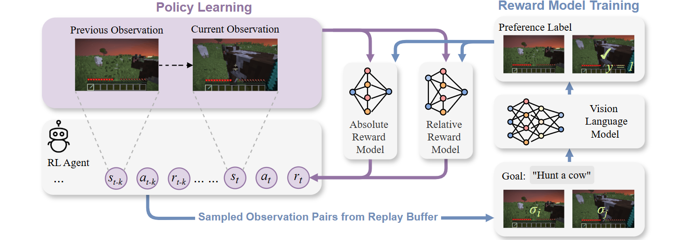
VLM-AR3L learns reward functions from VLM-generated preferences over visual observations. During reward model training, observation pairs are sampled from the agent's replay buffer and evaluated by a VLM according to the task goal. The resulting preference labels are used to train both an absolute reward model and a relative reward model. During policy learning, the absolute reward model evaluates individual observations, while the relative reward model compares the current and previous observations to provide complementary reward signals. This design combines the stability of state-based evaluation with the robustness of comparative progress estimation.
Experiments and Results
We evaluate VLM-AR3L across classic control, manipulation, and open-world embodied tasks. VLM-AR3L consistently outperforms prior VLM-based reward learning methods and achieves strong performance even in long-horizon tasks where sparse rewards provide insufficient guidance.
Comparison to Baselines
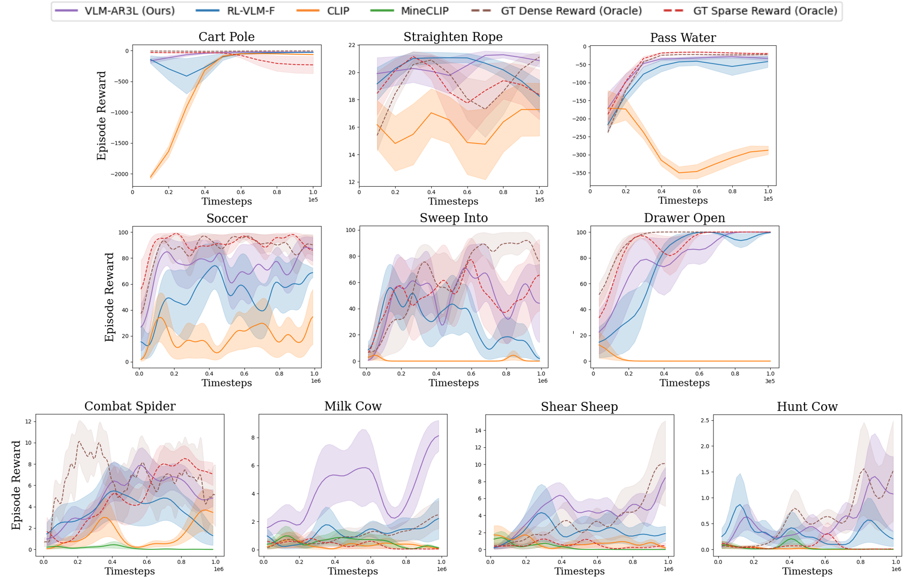
Visualization
Below we show policy and reward rollouts from VLM-AR3L across different environments. In the plots, absolute reward is blue, relative is purple, and combine.
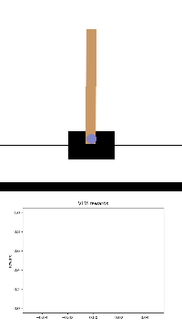
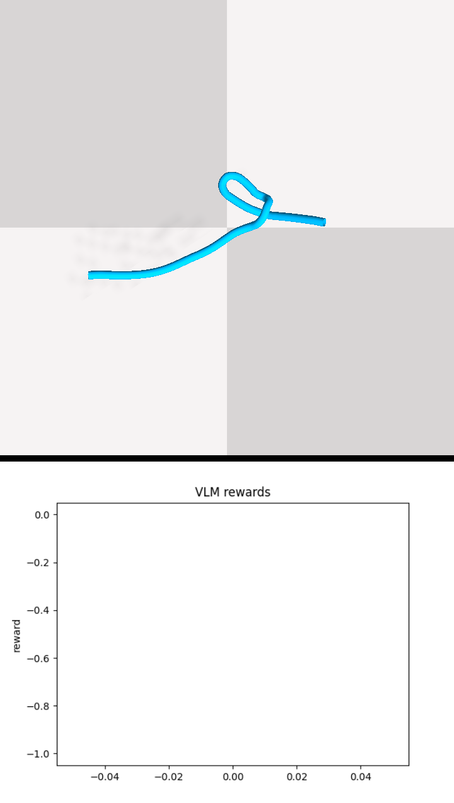
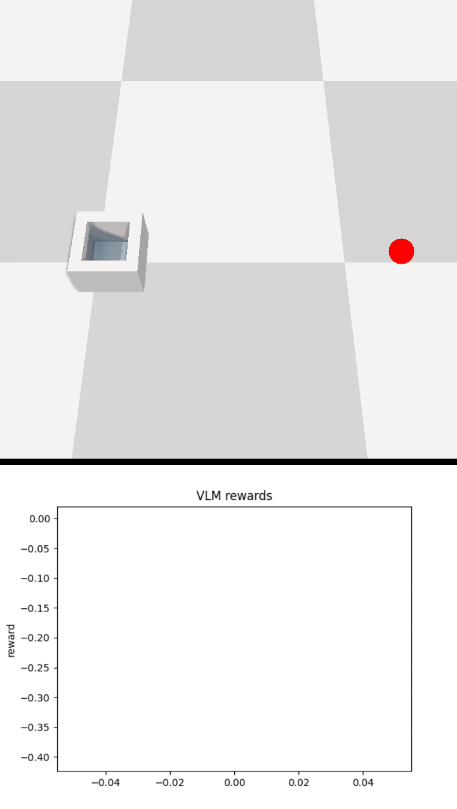
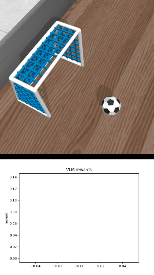

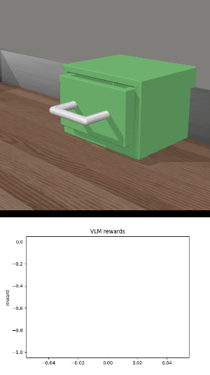
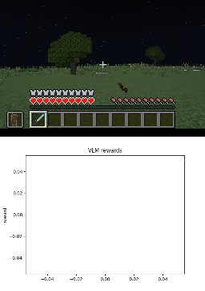
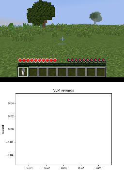
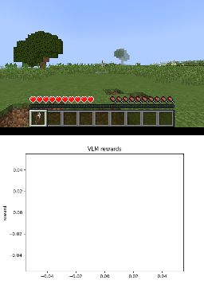
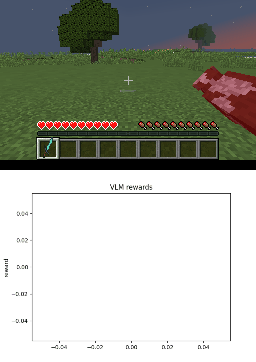
BibTeX
@inproceedings{chen2026vlmar3l,
title={VLM-AR3L: Vision-Language Models for Absolute and Relative Rewards in Reinforcement Learning},
author={Chen, Kuan-Chen and Chen, Winston and Sun, Wei-Fang and Hu, Min-Chun},
booktitle={Proceedings of the International Joint Conference on Artificial Intelligence},
year={2026}
}